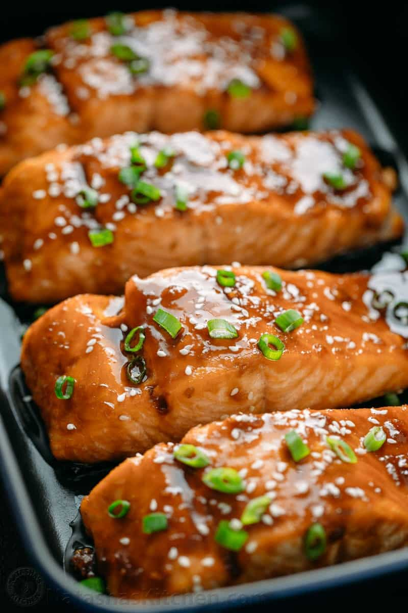

Teriyaki Salmon

Description
This salmon recipe is quick and simple! It does not require any lengthy marinating
but is super flavorful. This recipe will leave you with a flaky, juicy, and absolutely
delicious dish.
The recipe makes 8 servings and at 276 calories per serving, it is a great dish for meal prepping!
Set aside 25 minutes to to prep and 15 minutes to cook for a total of 40 minutes.
Ingredients
For the Salmon
- 2 1/2 lbs salmon fillet sliced into 2" wide slices
For the Teriyaki Sauce
- 3 tbsp teriyaki sauce
- 3 tbsp hoisin sauce
- 1 tbsp white vinegar
- 1 tbsp sesame oil
- 1/3 cup packed light brown sugar
- 2 large or 3 medium garlic cloves, minced
- 2 tsp freshly grated ginger, or 1/2 tsp ground ginger
Steps
- Grease a large rimmed baking sheet (cover with foil and then grease for easier clean-up). Preheat oven to 400˚F.
- Combine sauce ingredients and stir until brown sugar is dissolved.
- Place individual salmon slices in a mixing bowl. Pour the sauce over the salmon, cover with plastic wrap and let marinate 20 minutes (at room temp or refrigerated).
- Transfer salmon to prepared baking sheet (keep the marinade). Bake at 400 for 12-16 min or until salmon is flaky and cooked through, bake times may vary by thickness of salmon.
- While salmon is baking, transfer remaining marinade to a small sauce pan and bring to a boil then reduce heat to a simmer and cook, stirring occasionally until slightly thickened (3-4 min) then remove from heat.
- Once salmon is out of the oven, brush with teriyaki syrup, then sprinkle with chopped green onion and sesame seeds as desired.